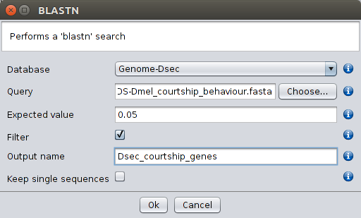

These options allow the user to perform BLASTN (search a nucleotide database using a nucleotide query), BLASTP (search protein database using a protein query), TBLASTN (search translated nucleotide database using a protein query) and TBLASTX (search translated nucleotide database using a translated nucleotide query), using a sequence that was retrieved using the Retrieve Search Entry option or using any other FASTA-formatted sequence (when using the options with external query).

BLASTN, BLASTP, TBLASTN and TBLASTX (with or without external query)